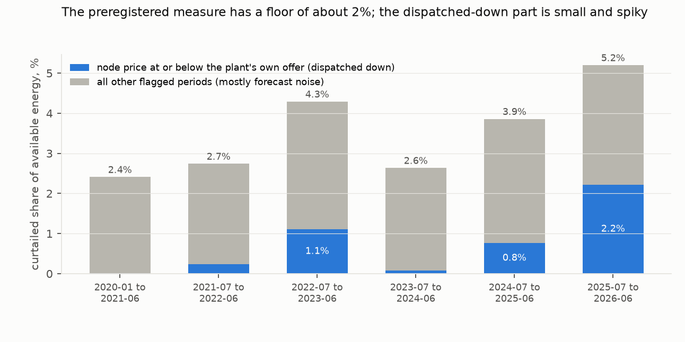
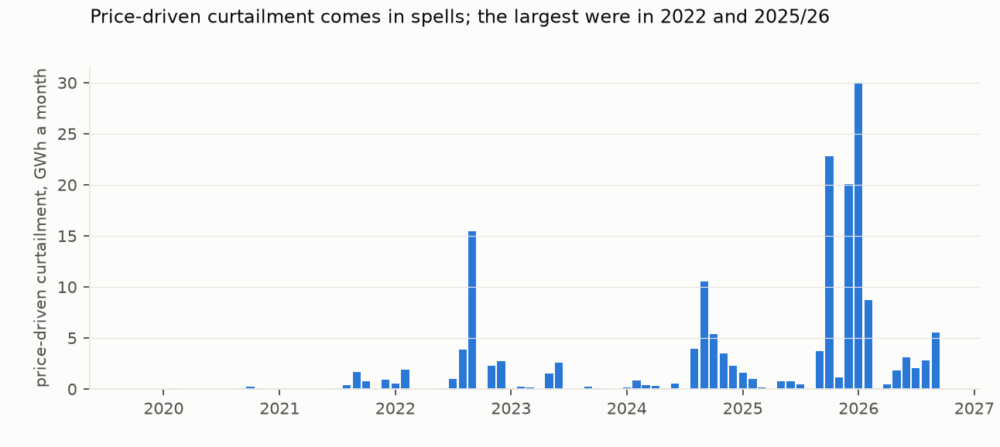
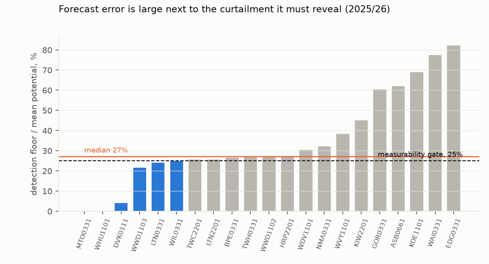

Verdict: Inconclusive. By the study's own preregistered gate, curtailment is not reliably measurable from offers alone. In 2025/26 the median plant's detection floor, the size of gap that forecast error alone produces, is 27% of its mean potential, above the 25% gate. By their rules H1 is Refuted and H2 Supported, but both readings are dominated by forecast noise that the preregistered measure counts by construction.
The clearest signal is curtailment in half-hours when the node price was at or below the plant's own offer: the plant was dispatched down. It reached 2.2% of available wind and solar energy in 2025/26, but 86% of that is at two wind farms, Turitea and Kaiwera Downs. Those are the only plants whose median offer is above $0.01/MWh and that still forecast their potential before the half-hour begins. Without them the fleet shows 0.4% in 2025/26. In 2022/23 the fleet without that year's two largest contributors (Waipipi and Te Āpiti) showed 0.9%. There is no clear trend, only spells.
- H1 (curtailment rose from below 0.5% in 2020 to at least 2.0% in 2025/26): Refuted by its rule. The measure reads 2.27% in 2020 (95% interval 2.13–2.42%) and 5.20% in 2025/26 (4.36–6.32%). The 2020 value is almost entirely the noise mass the rule flags by construction (2.22 of the 2.27 points), so the refutation reflects the measure's floor.
- H2 (at least half of 2025/26 curtailment happens when prices exceed $0.01/MWh): Supported by its rule. 72.7%
(64.1–82.3%) of measured curtailed energy falls in such half-hours, but half of the measured total is the noise mass,
which sits in unconstrained half-hours by definition. For the curtailment outside that mass (126 GWh), where the
line is drawn decides the answer:
- 53% is above $0.01, the plan's line;
- 27% is above the plant's own offer;
- 5% is above $1.
Nearly all of it happens at near-zero prices, and the $0.01 line splits it evenly only because the two dominant plants offer at $0.02 and $1.60.
In plain terms
When there is more wind or sun than the grid can use or wants to pay for, wind and solar farms are turned down or switched off. That is "curtailment". Other countries publish how much of it happens; New Zealand does not. We tried to measure it.
Every wind and solar farm tells the market, every half-hour, how much it could generate. We compared that with what it actually produced.
The farms' forecasts are off by a lot even when nothing is holding them back, so most of the gap is forecasting error, not curtailment. By the test we set ourselves in advance, we cannot measure curtailment reliably this way. In the last year, most wind farms also started sending their forecast after the half-hour had already begun, which can hide any turning-down.
What does show up clearly is two wind farms, Turitea and Kaiwera Downs, being turned down when power was cheap, especially in spring and summer 2025/26. They ask a little more than other wind farms for their power, so they are the first to be turned down.
What was asked
New Zealand's wind and solar build-out is accelerating, and the Electricity Authority is changing how intermittent
generators share reserve costs, but no curtailment statistic exists. The preregistration (plan.md) asked two
questions:
- H1: did curtailment grow from under 0.5% of available energy in 2020 to at least 2.0% in the 12 months to
June 2026?
- H2: is at least half of it not price-driven (node price above $0.01/MWh)?
It also set a gate: if forecast error swamps the signal, say so whatever H1 and H2 return.
How it was done
Data. All from the Electricity Authority's EMI service: - daily offer files, about 170 GB, streamed and filtered to wind and solar energy offers; - half-hourly metered output by generator (Generation_MD); - final prices by node.
25 points of connection were matched: 15 wind, 10 solar. Mahinerangi wind farm has no matching metered generator, and Rotohiko is a battery, so both are excluded.
Half-hours without metered output are dropped (9% of rows; listed below).
Measure (plan section 1). - Potential is the plant's latest potential on file for the half-hour, from the highest-numbered latest submission. - Unconstrained half-hours are those in which the price exceeded every price the plant offered at by $1 or more, and the plant offered at least its potential. - Bias correction. Per plant and quarter, potential is scaled by the median ratio of output to potential in unconstrained half-hours, pooled to the year when a quarter is thin. When the year is thin too, the scale is 1 and no floor is set, so those half-hours count as available but can never be flagged. - Curtailed half-hours are those whose gap exceeds the plant-quarter's 95th percentile of unconstrained gaps. - Intervals come from a 7-day block bootstrap with calibration re-estimated in each resample. Resampled days take the calendar position they are placed in, so their quarters are relabelled. The review's check against true quarters (150 resamples) moved the 2025/26 interval slightly (4.45–6.07% against 4.34–5.91%) and left 2020 unchanged.
Results
The measure and its floor (results/figures/F1_windows.png)


| 2020 | 2025/26 | |
|---|---|---|
| available energy (bias-corrected potential) | 2,128 GWh | 4,171 GWh |
| preregistered curtailed share | 2.27% (2.13–2.42) | 5.20% (4.36–6.32) |
| … in unconstrained half-hours (noise by construction) | 2.22% | 2.17% |
| … dispatched down (price at or below the plant's own offer) | 0.02% | 2.22% |
| … other flagged half-hours | 0.03% | 0.79% |
| non-price share of curtailed energy (H2) | 99% | 72.7% (64.1–82.3) |
The noise mass. The rule flags a half-hour when its gap exceeds the 95th percentile of gaps in unconstrained half-hours, and it counts unconstrained half-hours too. So it flags about 5% of them by construction: 5.0% in 2020, 4.7% in 2025/26. That mass is about 2.2% of available energy in both periods. A floor matched to the size of the forecast (by potential decile, a review check) leaves the dispatched-down figure almost unchanged (2.17% against 2.22%).
Who is dispatched down (results/figures/F3_monthly_price_driven.png)


| window | dispatched-down share of available energy | without the two largest plants | the two largest |
|---|---|---|---|
| 2020 (calendar) | 0.02% | — | — |
| Jan 2020–Jun 2021 | 0.01% | 0.00% | White Hill, West Wind |
| Jul 2021–Jun 2022 | 0.23% | 0.06% | Waipipi, White Hill |
| Jul 2022–Jun 2023 | 1.10% | 0.89% | Waipipi, Te Āpiti |
| Jul 2023–Jun 2024 | 0.07% | 0.03% | Waipipi, Turitea |
| Jul 2024–Jun 2025 | 0.77% | 0.45% | Waipipi, Kaiwera Downs |
| Jul 2025–Jun 2026 | 2.22% | 0.41% | Turitea (54 GWh), Kaiwera Downs (25 GWh) |
Two things make Turitea and Kaiwera Downs the plants that show it:
- Offer price. Almost every wind farm offers at $0.01/MWh. Turitea moved to $0.02 in 2025/26, and Kaiwera Downs offers at $1.60. A plant offering a little above the floor is the one dispatched down first when prices collapse.
- Timing of the potential. For most of the panel, plants submitted their latest potential a few minutes before the half-hour began (median lead 2–15 minutes to 2024/25). In 2025/26 most established wind farms switched to submitting it after the half-hour had started (median 1.2–11.6 minutes late, 76–89% of half-hours). A potential revised after the fact may absorb a turn-down and hide it. Among half-hours at or below the plant's own offer, the share flagged as curtailed fell from 2024/25 to 2025/26 at every plant that moved to post-period submission (White Hill 0.36 to 0.06, Tararua 3 0.20 to 0.03, Harapaki 0.24 to 0.12, Te Āpiti 0.13 to 0.04, West Wind 0.20 to 0.09). But it also fell at Waipipi, which did not move (0.50 to 0.28), so this is plausible, not shown (review check 9). Turitea, Kaiwera Downs and Waipipi still submit beforehand.
So the 2025/26 rise is partly about which plants are marginal and how they report, not only how often wind is turned down.
The gate (results/figures/F2_gate.png)


The median plant's floor is 27% of its mean potential in 2025/26, against the 25% gate. The review found it about 0.27 under every variant, and 0.269 for wind alone. Wind plants range from 22% to 60%. Solar plants sit higher because their potentials are stale: most are submitted days ahead (median leads of about 1.7 to 6.4 days for most solar plants and years). The review found their floors are 42–45% of mean potential even on daytime half-hours alone. The gate fails.
Robustness (results/tables/robustness.json, sensitivity_post_review.json)
| variant | 2020 | 2025/26 |
|---|---|---|
| preregistered | 2.27% | 5.20% |
| only the gap above the floor counted | 0.84% | 2.72% |
| floor at the 99th percentile | 0.76% | 3.01% |
| floor at the 90th percentile | 3.41% | 6.49% |
| no bias correction | 2.28% | 5.58% |
| unconstrained requires a $10 margin | 2.26% | 5.43% |
| plant-quarters with partial metering dropped (k < 0.5) | 2.27% | 5.19% |
| wind only | 2.27% | 5.11% |
| each plant left out (2025/26 range) | — | 3.80% (without Turitea) to 5.67% (without Harapaki) |
- The offered maximum output, planned as an alternative to the potential forecast, was not run. It is a nameplate value, populated in 2019/20, partly in 2020/21 and 2024/25, and fully from 2025/26, but empty in 2021/22 to 2023/24; the panel builder did not carry it.
- Real-time pricing. Before and after November 2022 the measure reads 2.91% and 3.95%.
- Weather. The potential forecasts track ERA5 weather at most plants, with correlations of 0.44–0.85 against 100 m wind speed or solar radiation. Two new solar farms are lower: Dannevirke 0.14, Tauhei 0.07.
- Rows without metered output. Half-hours with no metered output were dropped:
- Lauriston solar, October 2024 to June 2025 (12,386 half-hours; at that time Generation_MD shows only the Highbank hydro station at its point);
- Kohira/Pukenui, October to December 2023;
- Kaiwera Downs, August 2023;
- Mill Creek, October to December 2019;
- Waipipi, October to November 2020;
- Clandeboye, June to August 2026;
- Dannevirke, one day.
Projection, frozen for scoring after June 2027. By the preregistered rule (the 2025/26 share scaled by projected available energy from plants operating by September 2026), the measure would read 5.65% for the 12 months to June 2027. Four new plants have no usable metering yet (Clandeboye, Kaiwaikawe, Kōwhai Park, Pāmu Rā), so they enter that rule with no available energy. Projecting them from their potential instead gives 5.93%. Kaiwera Downs stage 2 is annualised from six commissioning months. Both figures are recorded. Given the floor, and the reporting change above, neither is a forecast of real curtailment, and the dispatched-down component is not projected.
What this does and does not show
- It does not provide a reliable curtailment statistic. The plants' own potential forecasts err by more than a quarter of their mean output at the 95th percentile. Solar potentials are days old. Since 2025/26 most wind potentials arrive after the half-hour has begun.
- It shows that wind farms offering slightly above the $0.01 floor are dispatched down in low-price spells: about 80 GWh at Turitea and Kaiwera Downs in 2025/26, concentrated in October 2025 to January 2026. The rest of the fleet shows similar spells (largest in 2022/23) but no rising trend.
- It does not separate market-driven dispatch-down from network constraints. A constrained node's price falls to the marginal offer, so "price at or below the plant's offer" includes plants constrained off. The system operator's dispatch records would be needed to tell them apart.
- Better measures. A sounder measure would:
- use potentials fixed before the half-hour (or an independent weather-based potential);
- count only candidate half-hours against a forecast-matched reference, not every half-hour above a percentile;
- use dispatch records to classify cause.
Process and deviations
- Preregistration.
plan.mdwas committed before any series was built. It fixed a 2020 baseline, since the potential field is empty before late 2019. The fetch, build and analysis code were committed before their outputs. - Deviations (
deviations.md):- D1, before any series: an unpublished day; December 2025 prices assembled from daily files; generation column-name case; the two fuel codings; partial metering.
- D2: the failed gate and the post hoc decomposition (
code/diagnostics.py). - D3, after independent review:
- the dispatched-down relabelling, the per-plant series, offer prices and potential lead times
(
code/sensitivity_post_review.py); - the corrected maximum-output statement, the dropped rows and the projection variant;
- the bootstrap and pooling notes.
- the dispatched-down relabelling, the per-plant series, offer prices and potential lead times
(
- Review. An independent adversarial review (
review/review.md) reproduced every number and the fetch filter exactly. It found the two-plant concentration, the post-period potentials, the stale solar potentials and the projection issue, all addressed here.
Reproducing it
code/fetch.py, code/build.py, code/analysis.py, code/diagnostics.py, code/sensitivity_post_review.py,
code/figures.py.
- Inputs are public EMI files from the Azure blob store, plus Open-Meteo ERA5.
- Results are in
results/tables/:primary.json,robustness.json,diagnostics.json,sensitivity_post_review.json,ledger_monthly.csv(the open ledger by plant and month),build_log.jsonandoutput_validation_monthly.csv.